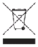

Déchets d'équipements électriques et électroniques (DEEE).
|
 |
L'utilisation du symbole ci-contre signifie que le système ne doit pas être éliminé avec les déchets ménagers, qu'il doit faire l'objet d'une collecte sélective et qu'il a été mis sur le marché après le 13 août 2005. |
Pour plus d'informations concernant la mise au rebut appropriée du système (tri sélectif, collecte, traitement des déchets issus du système), contacter les autorités locales, le fabricant ou le revendeur auprès duquel le système a été acheté.